Round 1 — the core workflows
1
live events
disaster response
Input
Find the clearest Sentinel-2 scene of Lake Chelan from the past two weeks, tell me what's burning nearby, and give me a map I can share.
Output
Found both active wildfires (Navarre Coulee, Chelan Hills), picked the 0.7% cloud July 5 scene over a newer 20%-cloud one, and mapped the fires as markers on the imagery.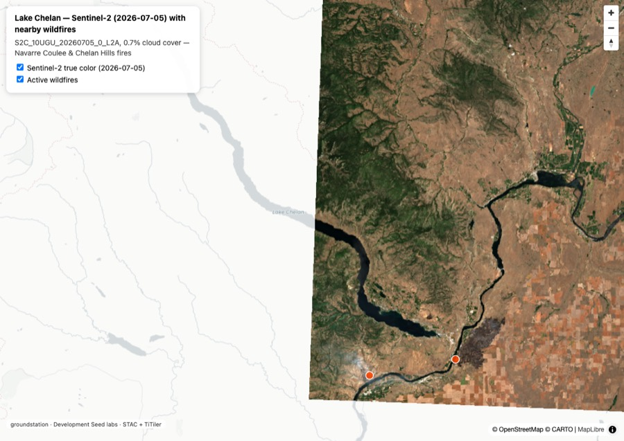
live map ↗scene judgment + live event feeds in one answer
2
year over year
forest health
Input
Compare NDVI east of the Cascades near Wenatchee between now and the same window last July. Same collection, low cloud. Map both dates so I can toggle.
Output
Same tile, both years near cloud-free: 0.626 vs 0.622 — "noise-level, not a real vegetation change." No drought signal, no false alarm.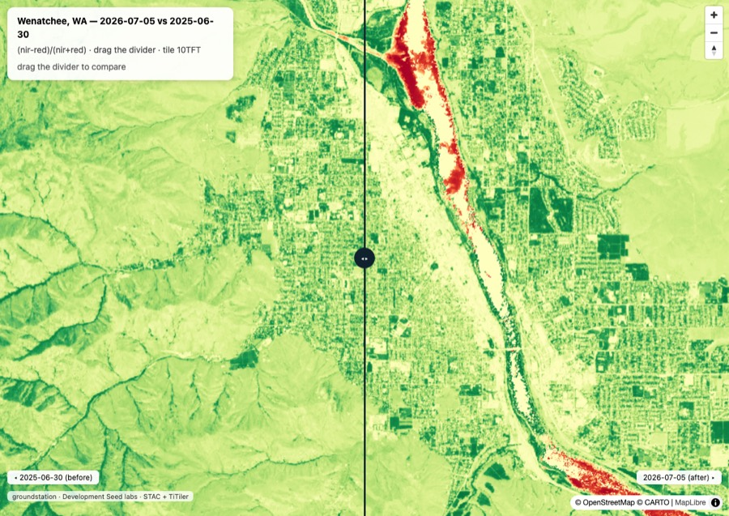
live map ↗an honest null result is a result
3
radar
wet-season monitoring
Input
Optical is useless over the Barotse Floodplain in the wet season. Find recent Sentinel-1 radar scenes there instead and map one — check the collection's assets for the right rescale.
Output
Chose Sentinel-1 VV, ran statistics first and derived the stretch (30–380) from actual pixel percentiles instead of guessing a dB rescale, and flagged that the floodplain sits on a swath seam.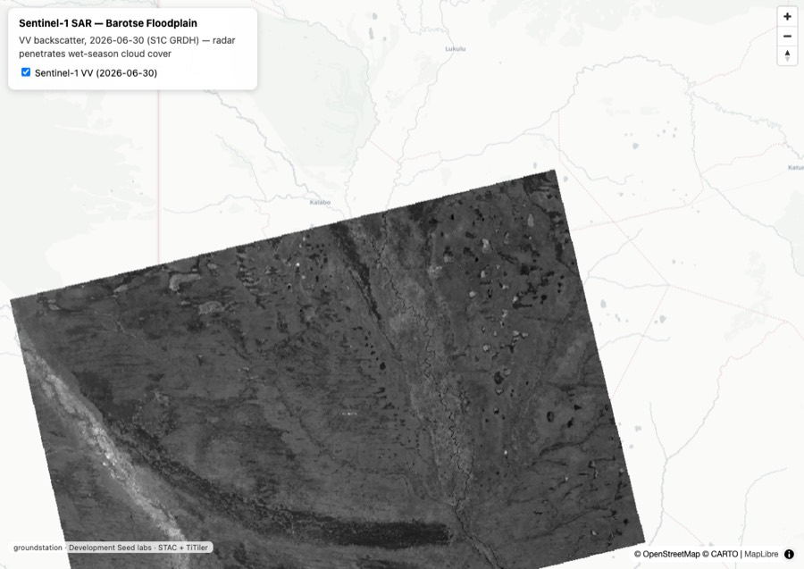
live map ↗Learning → the S1 digital-numbers recipe is now codified in the skill, so the next agent doesn't have to derive it.
4
water index
hydrology
Input
How much surface water is on the Barotse Floodplain right now vs early March? Use NDWI on Sentinel-2, give me the numbers and a two-layer map.
Output
NDWI −0.29 → −0.48, a 64% relative decline, correctly read as the expected seasonal Zambezi drawdown — "not an anomaly" — with a swipe map.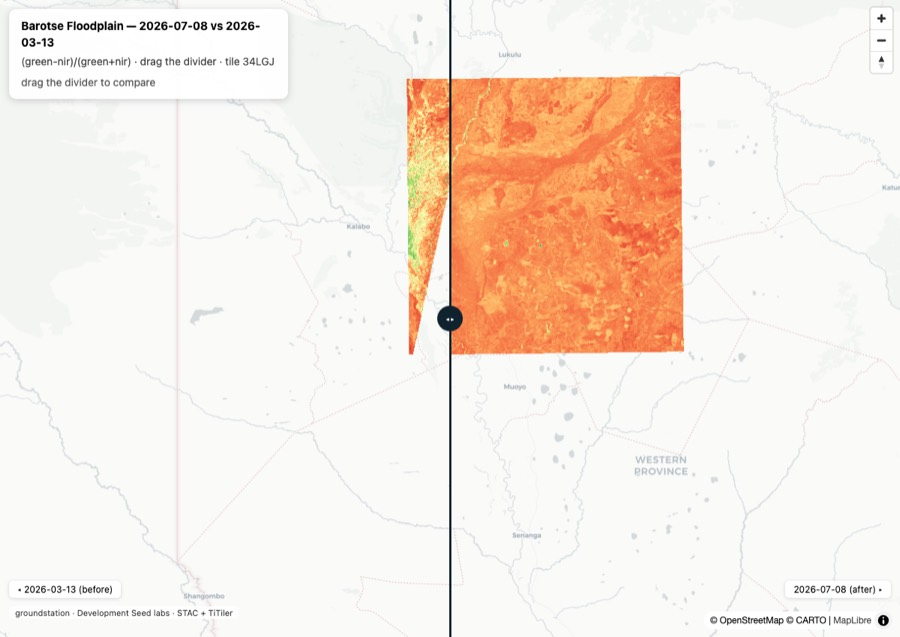
live map ↗index math + hydrological domain reading
5
nasa products
post-fire recovery
Input
What does NASA VEDA have on the Caldor fire? Put the burn severity layer on a map over a current Sentinel-2 scene of the Eldorado National Forest.
Output
Found both VEDA Caldor products, read the categorical stats (majority class 3, moderate severity), and layered the 2021 severity raster over a current 0.1%-cloud scene — 2021 damage against present-day forest.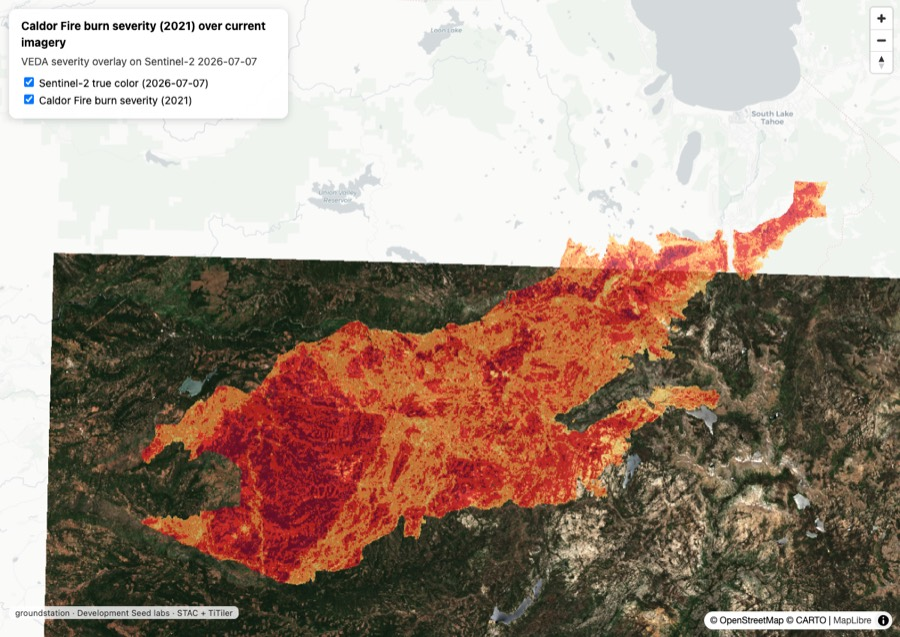
live map ↗Learning → this map exposed that "two rasters → swipe" was wrong for overlays. Maps now swipe only for same-collection pairs; thematic overlays stack with opacity.
6
hi-res mosaic
municipal GIS
Input
Show the newest NAIP aerial imagery of Des Plaines, Illinois with ESA WorldCover land cover from Planetary Computer as a toggleable layer on top.
Output
Mosaicked 7 NAIP tiles (all from the same 2023-07-10 capture) plus 2 WorldCover tiles split at the 42°N seam, cross-catalog, as toggleable layers.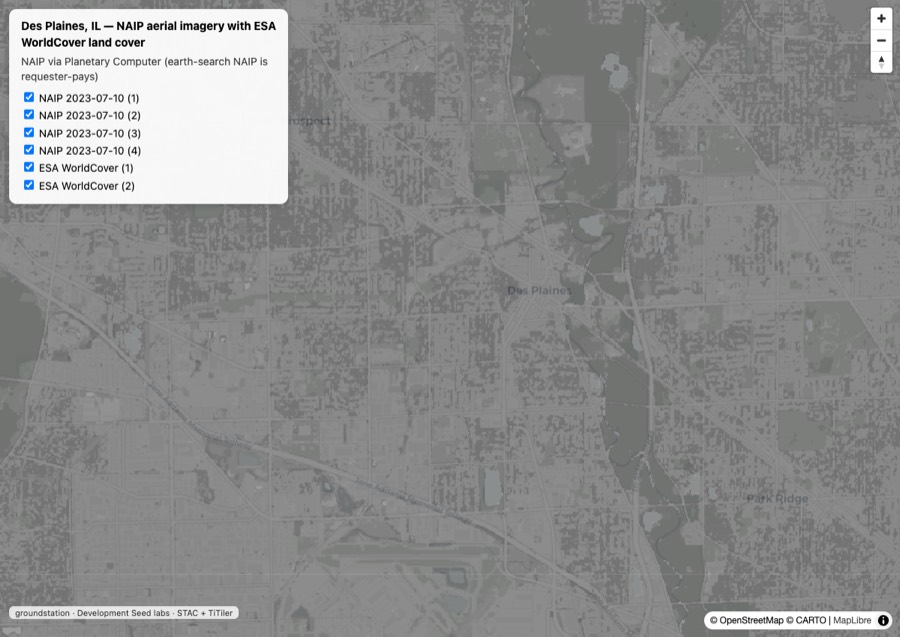
live map ↗Learning → the NAIP layers rendered blank — earth-search NAIP is requester-pays, like Landsat. NAIP now routes to Planetary Computer.
7
flood watch
emergency management
Input
Any active flood alerts along the Rio Grande between El Paso and Laredo? Show me alerts, week-ahead rain, and the latest usable imagery on one map.
Output
No active alerts — so it found the forward signal instead: Del Rio and Eagle Pass tracking toward a 40–60mm rain event July 14–15, "the stretch most likely to generate a flood watch if it verifies."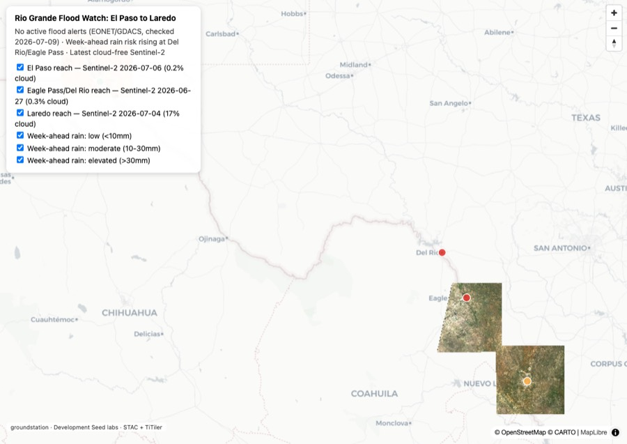
live map ↗synthesis across feeds, looking forward not just backward
8
data quality
EUDR / supply chain
Input
For the Yirgacheffe coffee region in Ethiopia, compare vegetation between January and this month with NDVI stats, and tell me which scenes you'd trust given cloud cover.
Output
Recovered from a stadium-point geocode by widening to the growing zone, then refused to trust its own number: July's best scene is 53% cloud (Kiremt rains), so "trust the direction, not the magnitude — or switch to Sentinel-1."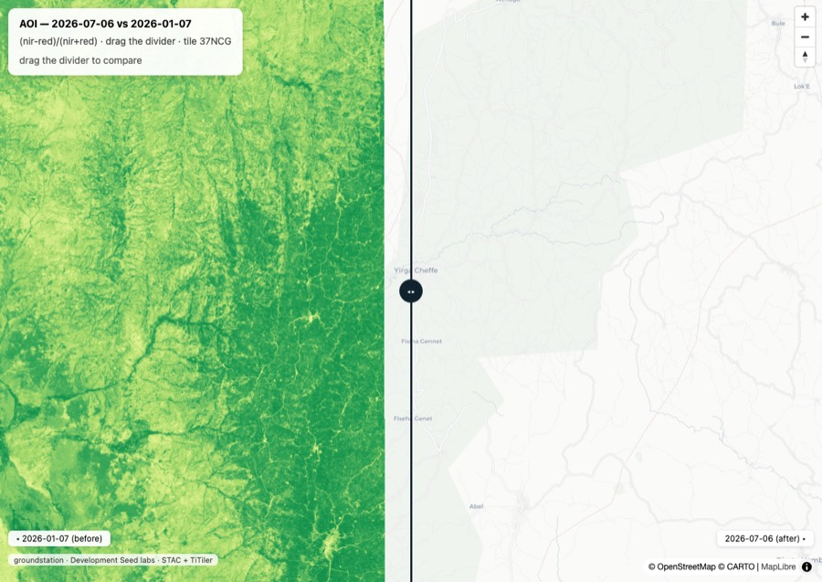
live map ↗Learning → region-scale geocode sanity checks are now in the skill.
9
situational brief
pacific islands
Input
Brief me on Efate, Vanuatu: any open storm or disaster alerts, the week ahead in weather, and the most recent cloud-free Sentinel-2, all on a map.
Output
One distant Green-level quake correctly dismissed, dry-season weather read, and two adjacent tiles stitched to span the island (June 1 beat a cloudier July 8 scene).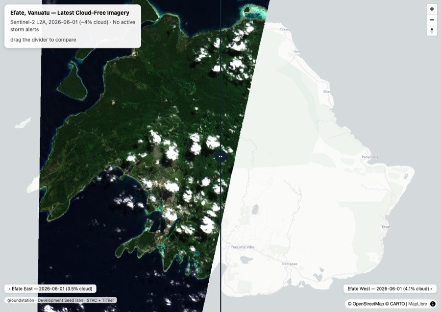
live map ↗alert triage + multi-tile AOIs
10
urban analysis
infrastructure
Input
Show the Ashburn, Virginia data center corridor: newest NAIP at full resolution plus a Sentinel-2 from this month as toggle layers, and give me the NDVI stats for the corridor.
Output
Newest fully covering NAIP (2021 — and it said so: "won't reflect the last ~5 years of construction") + current Sentinel-2; read NDVI's spread (mean 0.38, std 0.30) as "the signature of tree cover mixed with rooftops and pavement."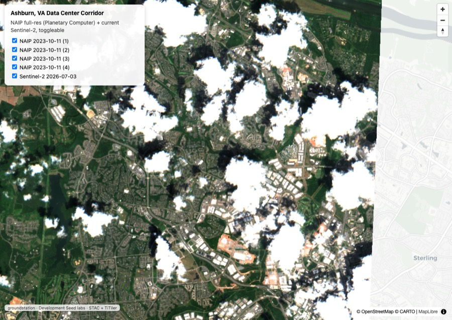
live map ↗distributions over averages; resolution tradeoffs named
Round 2 — different shapes, partner-shaped
11
snow index
water security
Input
How much snow is left in the North Cascades compared to early May? Use NDSI (green-swir16)/(green+swir16) on Sentinel-2, give me the numbers and a swipe map.
Output
Snow-covered fraction via the standard 0.4 threshold: 27.6% → 5.9% since early May, "a 4.7× drop" — and explained May's lower valid-pixel share as terrain shadow from the low sun angle.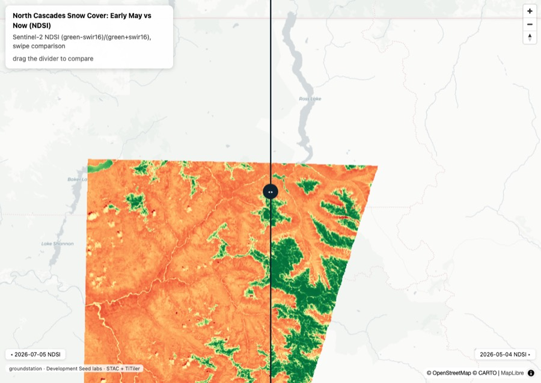
live map ↗Learning → NDSI (with its threshold) and NBR joined the skill's index recipes.
12
global triage
humanitarian response
Input
What are the most severe disaster alerts anywhere in the world right now? Give me the top three by severity and map the worst one with recent imagery.
Output
GDACS's only Red alert: Super Typhoon Bavi, mapped with a same-day Sentinel-2 pass through the typhoon itself; China floods and Iberian fires ranked next, a chronic drought sensibly demoted.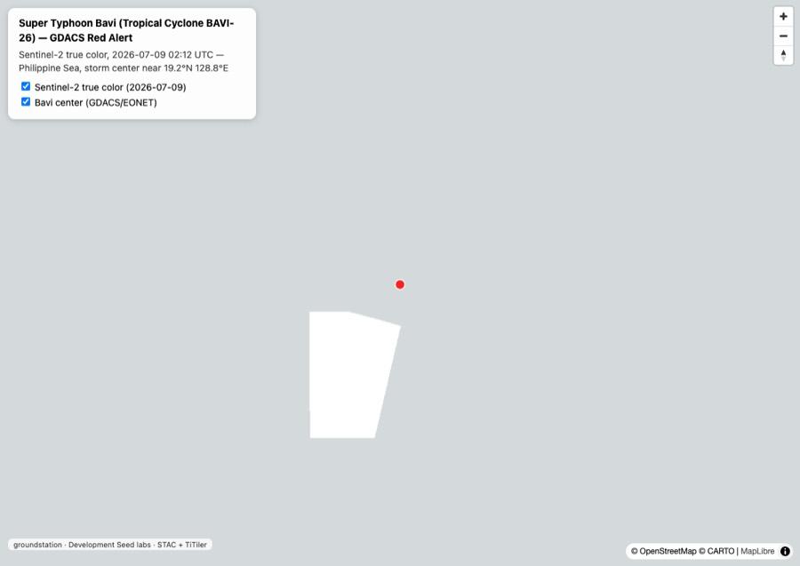
live map ↗worldwide triage with no AOI given
13
epistemics
marine / coastal
Input
Show me the Wadden Sea tidal flats: latest cloud-free Sentinel-2, compute NDWI, and tell me honestly what you can and cannot say about tide state from one scene.
Output
What one scene proves: flats exposed at 11:06 UTC. What it can't: position in the tidal cycle — "NDWI has no time derivative and no absolute datum" — naming Rijkswaterstaat gauges as the missing reference.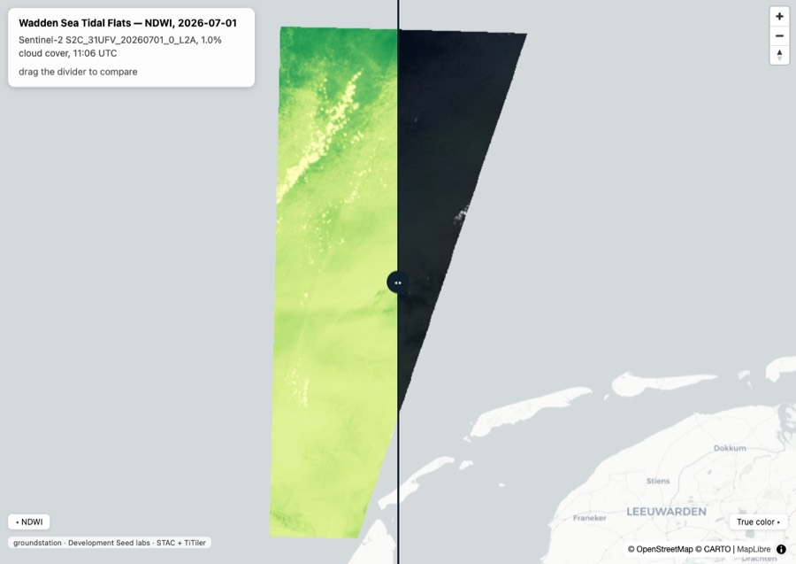
live map ↗the limits of the data, stated before anyone asks
14
decadal change
urban / ports
Input
Compare Jakarta's northern coastline between 2019 and now using Landsat — is there visible land change or new construction along the bay?
Output
Hit AccessDenied on earth-search's requester-pays Landsat bucket, recovered by switching to Planetary Computer's copy, then spotted the Tanjung Priok port expansion projecting into the bay in the 2019-vs-2026 swipe.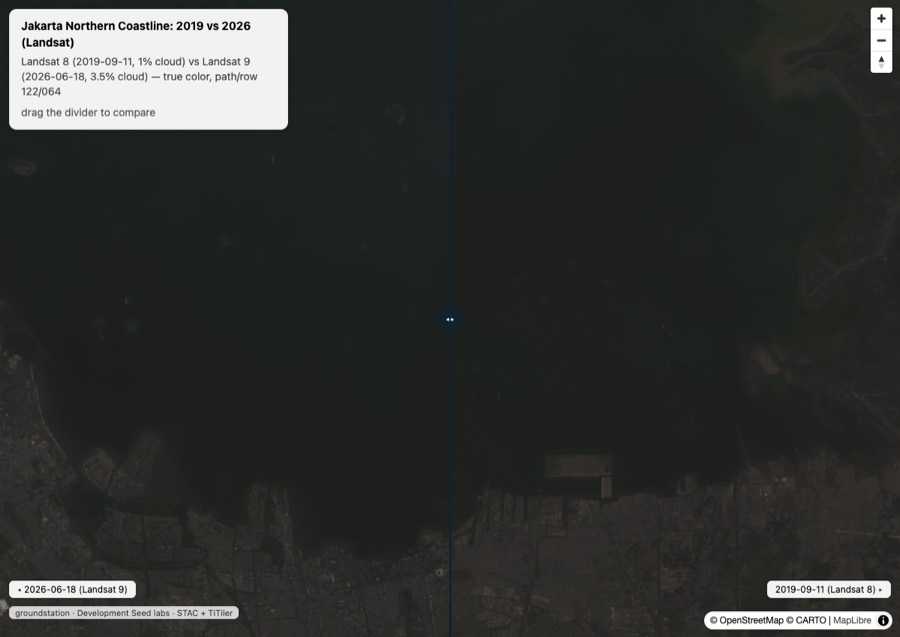
live map ↗Learning → Landsat routing is now codified: earth-search Landsat won't tile, planetary-computer is the path.
15
verification
EUDR / due diligence
Input
A client claims the area around Ouarzazate, Morocco has greened significantly since 2022 due to agroforestry. Verify: compare vegetation then vs now and tell me if the greening is real.
Output
+0.008 NDVI spread uniformly across the whole distribution including bare rock, 98th percentile flat: "more consistent with interannual variability… the data don't support 'greened significantly'" — with an offer to re-run on the exact plot.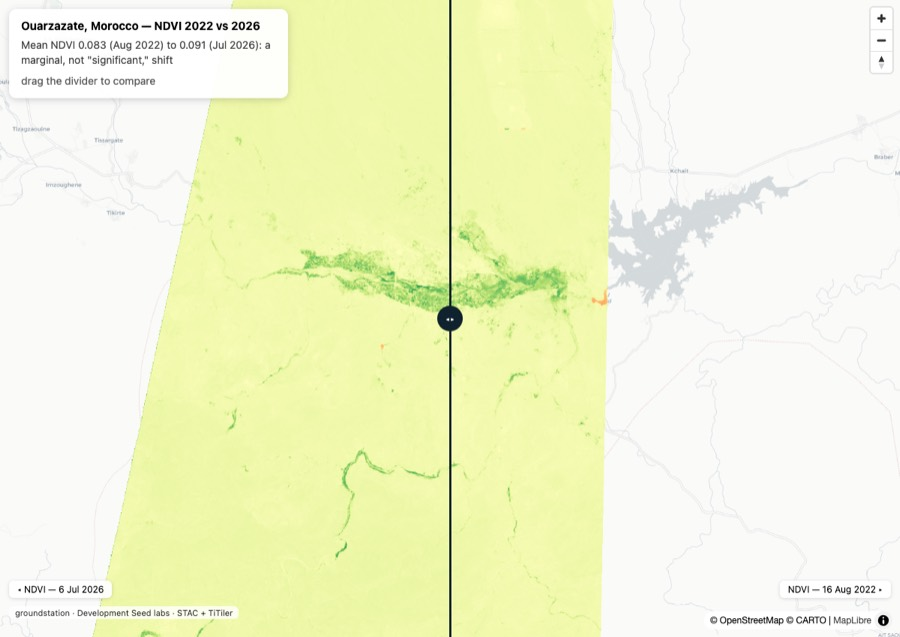
live map ↗claim verification a due-diligence team could cite
16
null result
aviation / ash
Input
Is there any current volcanic activity in Iceland? If so, show the site on recent imagery and check whether the week's winds would push ash toward Reykjavik.
Output
No eruption — and it verified the feed wasn't down (it had flagged Etna's July 6 eruption), imaged the Sundhnúkagígar fissures anyway, and declined to fabricate an ash analysis, reporting that the weather tool lacked wind direction.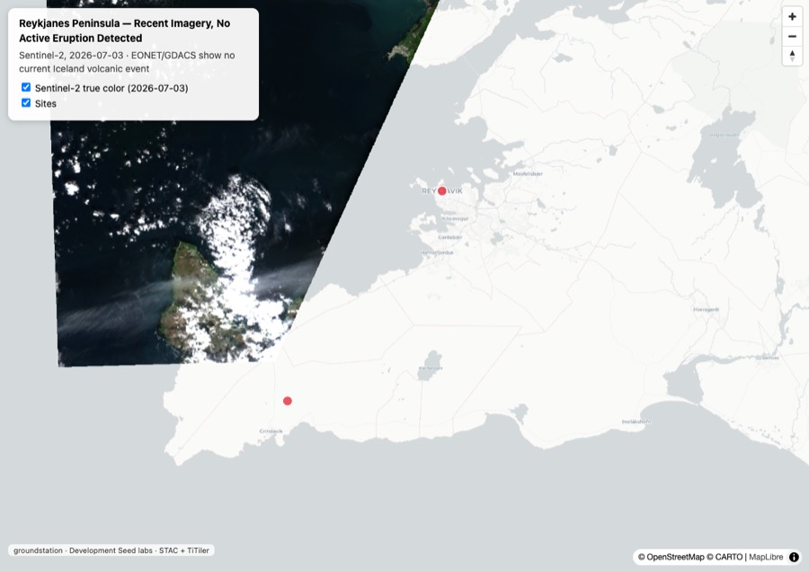
live map ↗Learning → dominant wind direction added to
weather_summary the same day — plume questions need it.17
terrain
flood journalism
Input
I need elevation context for a flood story in Cologne: map the Copernicus DEM with a terrain colormap plus the latest imagery of the Rhine, and tell me the elevation range of the city.
Output
Four DEM tiles + fresh Rhine imagery, and it separated the bbox artifact (240m foothills caught at the corner) from the answer that matters: the city core sits at 37–65m, "the relevant band for flood exposure."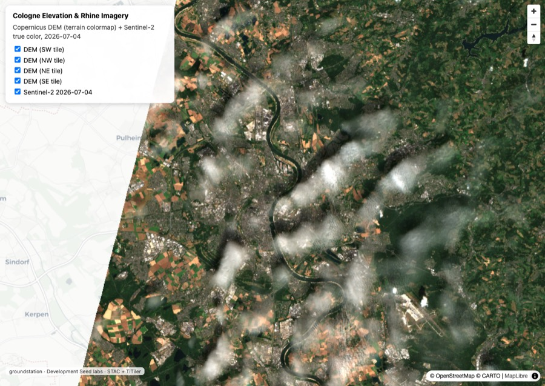
live map ↗terrain data + spatial-artifact awareness
18
discovery
development / urban growth
Input
What datasets can you reach about nighttime lights or human settlement, and which would you use to show urbanization around Nairobi? Show one on a map.
Output
Surveyed VEDA's event nightlights, GRDI, HREA, and io-lulc across catalogs — then argued lights "saturate over a dense core" and swiped io-lulc's built-up class 2017 vs 2023 instead: sprawl toward Kajiado and Kiambu, visible.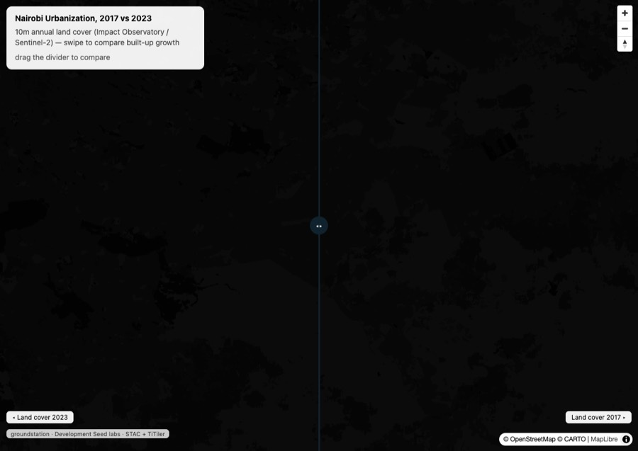
live map ↗dataset discovery with an opinion, not a list
19
burn severity
wildfire response
Input
Assess burn severity around the Navarre Coulee fire near Chelan using NBR (nir-swir22)/(nir+swir22): compare the latest scene against pre-fire, give me the delta, and map both.
Output
Pre/post dNBR (mean −0.033, median −0.045 in two weeks) with the dilution explained (steppe, lake pixels), a smoke-vs-cloud caveat, and "the burn may still be spreading past what this scene captures."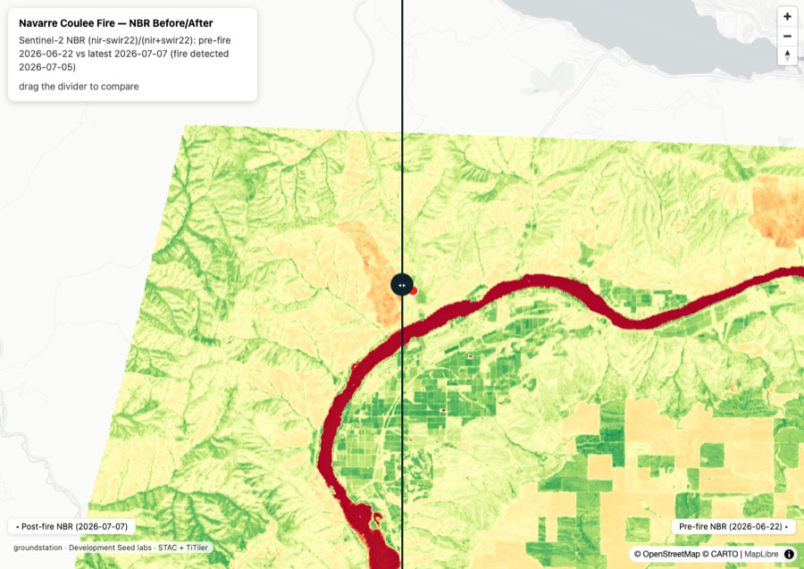
live map ↗the assessment a response team actually needs, caveats included
20
catalog trust
data providers
Input
Find the same recent Sentinel-2 scene over Munich in both earth-search and planetary-computer, compare their reported cloud cover, preview both, and tell me if the catalogs agree.
Output
Exact agreement: 0.606% cloud in both catalogs — same ESA product under different ID conventions, both previews clear. The catalogs check out.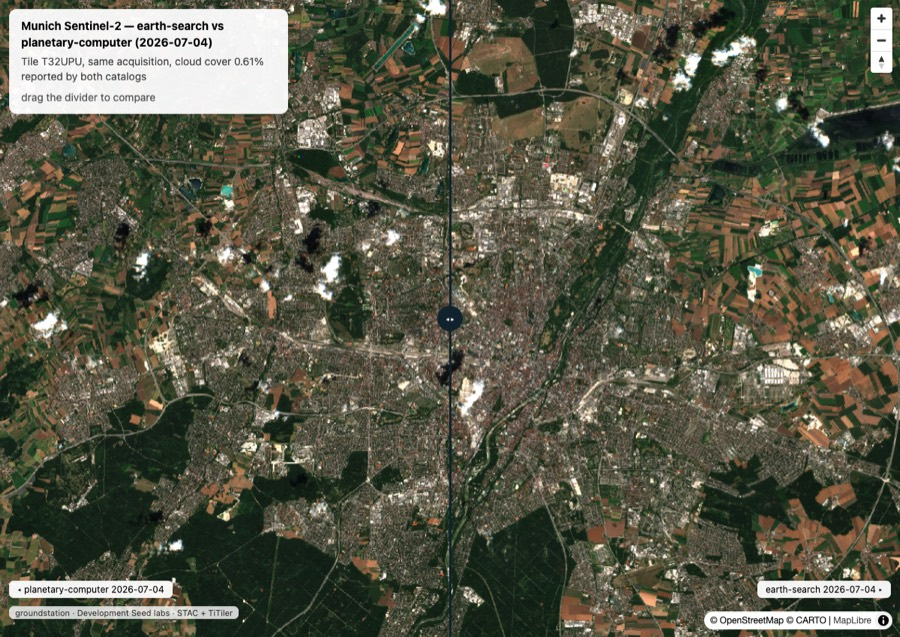
live map ↗cross-catalog consistency, verified not assumed
Round 3 — this month, and the map we hadn't touched
21
deforestation
GNW / nature
Input
It's the start of the Amazon dry season — check the area around Novo Progresso in Pará, Brazil for fresh forest clearing: compare vegetation now vs March, look for new bare patches, be honest about what optical can miss, and map what you find.
Output
Refused to map NDVI — a March-vs-July comparison would fake a "regrowth" signal from wet/dry seasonality — and did the honest true-color read: old fishbone clearing distinguished from fresh rectangular patches cutting the southeast forest margin, with a cloud caveat.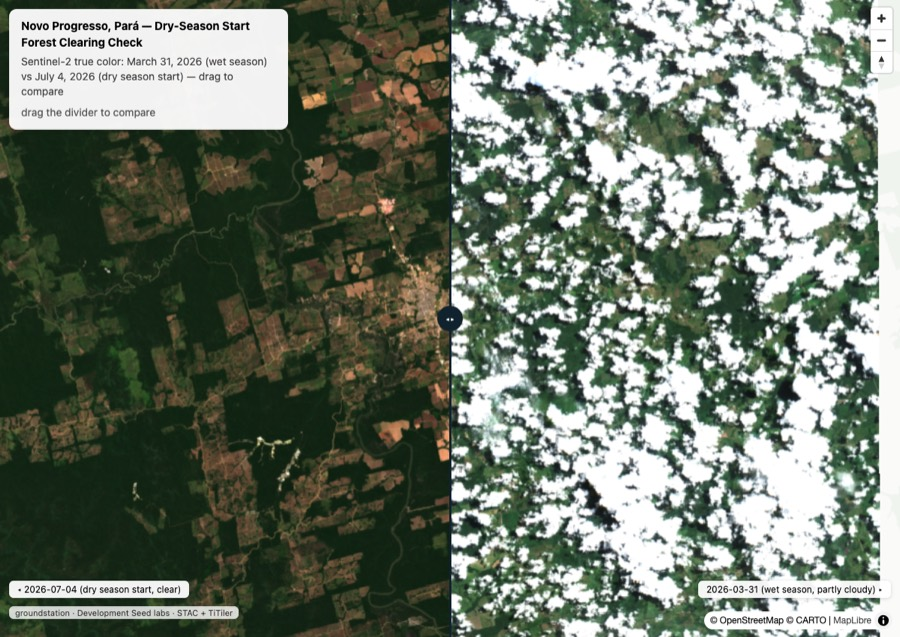
live map ↗method judgment beats index reflexes
22
cryosphere
climate / Arctic
Input
It's peak Greenland melt season. Look at the Ilulissat/Jakobshavn area: latest usable imagery, a read on melt ponds or bare ice versus early June, and whether the week ahead stays above freezing.
Output
Caught the subtle signal: mean NDWI dropped while melt ponds grew — snow receding to expose darker bare ice. Coast stays above freezing all week; the ice sheet interior dips to −0.3°C around July 12 for a brief refreeze.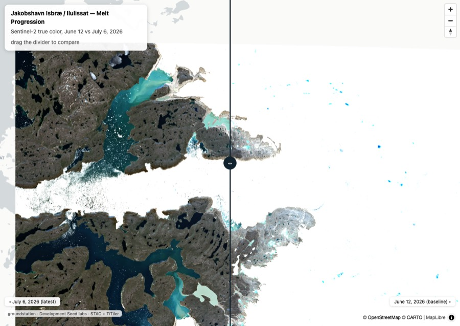
live map ↗reading a nuanced signal correctly, not just reporting it
23
flood radar
humanitarian / monsoon
Input
Peak monsoon: assess flooding around Sylhet, Bangladesh using Sentinel-1 radar since optical will be clouded out — compare backscatter now vs pre-monsoon April and check disaster alerts.
Output
The classic SAR flood signature: a dark low-backscatter zone ballooning across the haor basins west of Sylhet vs April. Noted GDACS/EONET lag ("no alert doesn't mean no flooding") — and found our compose.yml gap (S1 statistics 500'd without AWS_NO_SIGN_REQUEST).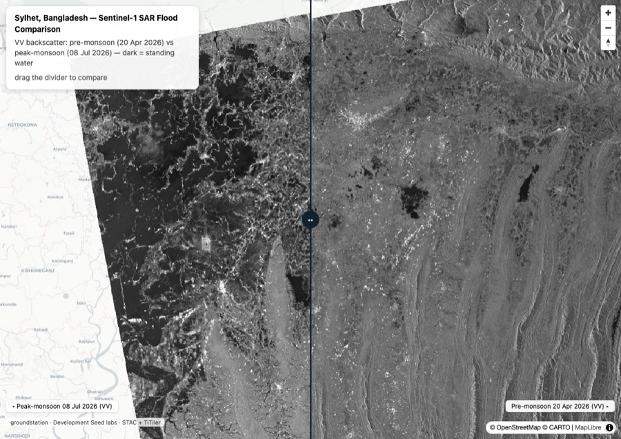
live map ↗Learning → the agent found the local-tiler config gap; AWS_NO_SIGN_REQUEST is now in compose.yml.
24
geostationary
storms / nowcasting
Input
What does GOES see over the Gulf of Mexico right now? Find the most recent GOES imagery on Planetary Computer, show it, and explain what geostationary coverage gives us that Sentinel cannot.
Output
It was 2 AM over the Gulf — so it rendered infrared Band 13 because true color is dark at night, then nailed the tradeoff: "GOES is the when instrument; Sentinel is the where, precisely instrument."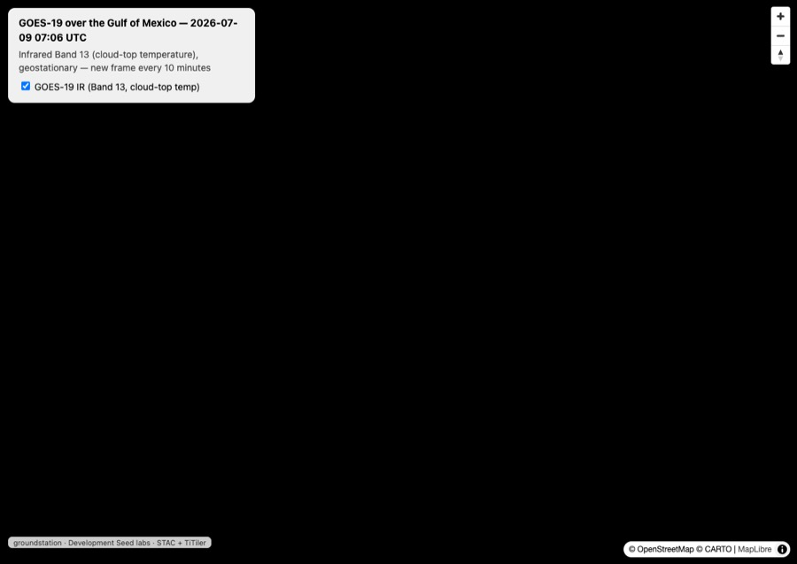
live map ↗Learning → GOES and MODIS tiles rendered empty via PC's item endpoint; PC tiling now uses the registered-mosaic path (their canonical renderer) for every collection.
25
urban heat
cities / heat risk
Input
Phoenix in July: use MODIS land surface temperature from Planetary Computer to show the urban heat island — the metro versus the surrounding desert — plus this week's forecast highs.
Output
Day/night LST swipe with a re-derived color range (the global default saturates the whole Southwest red in July), an honest processing-lag note (newest composite ends June 18), and an early-monsoon read from the wind direction field added in round 2.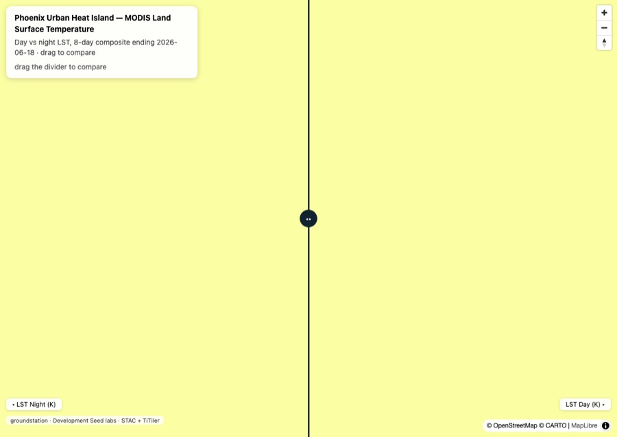
live map ↗round-2 fixes already paying off downstream
26
surface water
water security / Sahel
Input
Using the JRC Global Surface Water data on Planetary Computer, show me where water is seasonal versus permanent around Lake Chad, and what that pattern means for the region.
Output
Permanent pool vs seasonal fringe mapped, then the regional read: the pulse is river flood arriving from the Chari and Logone, the fringe is where recession agriculture and grazing happen, and ~30M people depend on that ratio.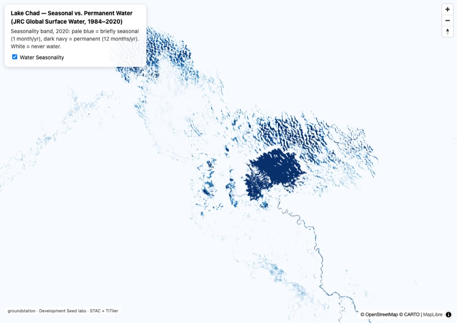
live map ↗a data layer turned into a livelihoods story
27
snowpack
water supply / Andes
Input
It's austral winter — how is the snowpack above Santiago, Chile building compared to early June? Snow-covered fraction for both dates and a swipe map. This is the city's drinking-water storage.
Output
Named the actual basin and reservoirs (Cajón del Maipo, El Yeso, Laguna Negra): snow-covered fraction 15.8% → 45.8% in a month, both scenes ~0% cloud — normal winter accumulation, quantified.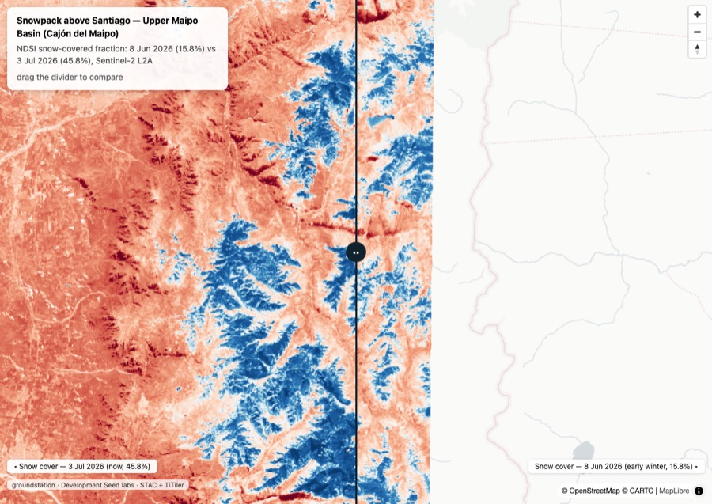
live map ↗the southern hemisphere's July, handled correctly
28
water quality
marine / EMODnet-shaped
Input
July is cyanobacteria bloom season in the Baltic. Check the Gulf of Finland for visible algal blooms in the latest cloud-free Sentinel-2, describe the extent honestly, and say what a chlorophyll product would add over true color.
Output
Ran an NDCI chlorophyll proxy alongside true color: patchy early-season bloom near Tallinn, not basin-wide, St. Petersburg inconclusive under cloud. Then the honest gap: "I can say 'this patch looks pigmented'; a chlorophyll product would say '15 mg/m³ and rising.'"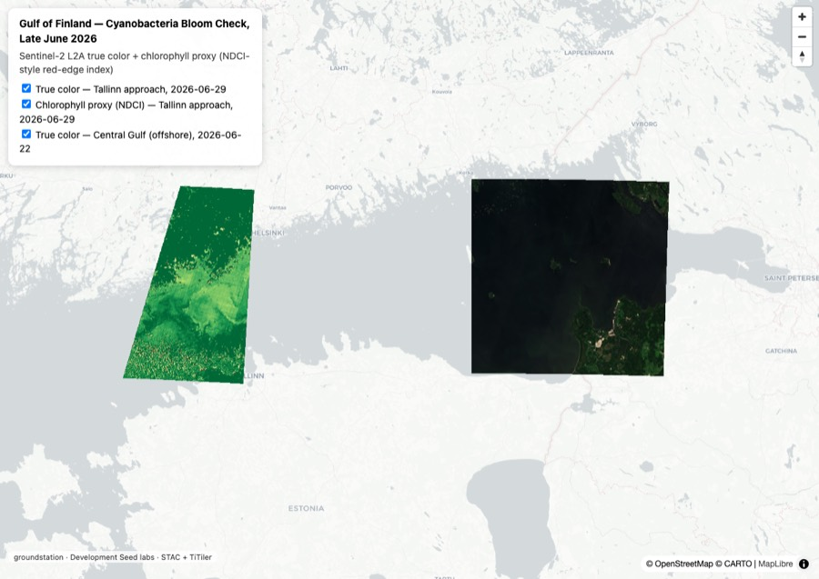
live map ↗knows the difference between looking green and being a bloom
29
development
energy access / ADB-shaped
Input
Using the HREA electricity access data on Planetary Computer, how does settlement electrification look around Kisumu, Kenya? Map it with recent imagery for context.
Output
HREA lightscore overlaid at 75% opacity on fresh imagery — urban core green, fringe fading red — with the two honest caveats: the data is 2019 (Kenya's last-mile program may undersell current coverage), and PC statistics weren't wired, so "the map is the read here, not a number."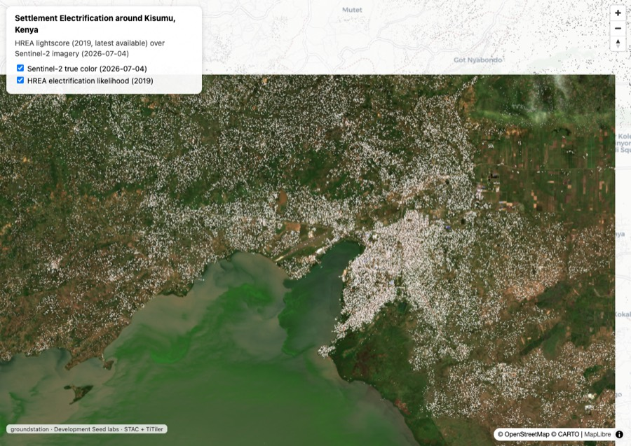
live map ↗Learning → three round-3 agents hit the missing PC statistics; compute_statistics now works on planetary-computer (named-asset expressions included).
30
preparedness
Caribbean / disaster response
Input
Hurricane season just started: build a pre-storm baseline for Dominica — the latest cloud-free true color, confirm no active storms, and tell me exactly what you'd compare after a landfall (bands, indices, and why).
Output
A complete post-landfall playbook: SAR first (cloud-independent), then compare_dates NDVI against the archived June 19 baseline scenes (ids stated), NDWI for flood extent, true color last — with NBR repurposed for canopy-water stress, referencing Maria 2017 as the severity yardstick.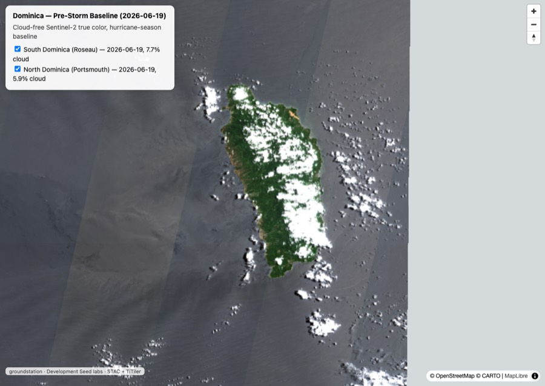
live map ↗the before is banked; the after is a procedure, not a scramble
Reproduce any of these
claude -p "<prompt>. Finish with the map path as MAP: <path>." \
--mcp-config '{"mcpServers":{"groundstation":{"command":"uv","args":["--directory","<repo>","run","groundstation"]}}}' \
--strict-mcp-config --allowedTools "mcp__groundstation" \
--append-system-prompt "$(cat skills/earth-data/SKILL.md)"